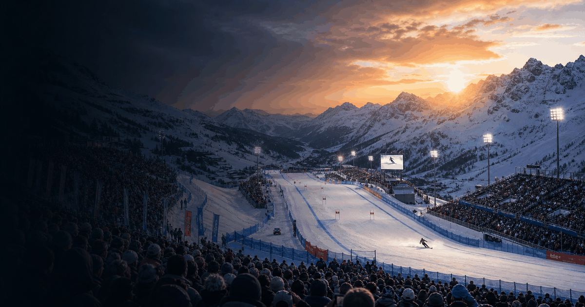

Multi Sport event guide
Winter Olympics
A compact OneSliders guide to the Winter Olympics: the four-year cycle, actual host editions and the next Games.
 More Multi SportInterested in more Multi Sport?
More Multi SportInterested in more Multi Sport?Explore related events, places and calendar moments.
The Winter Olympics are a four-year Olympic cycle. This page must show actual host editions, not annual placeholders.
The year slide switches between real Winter Olympic editions. The stages slide breaks the Games into ceremony, competition and closing moments.
The general slide explains the event; the year slide carries selected-year dates, status and planning details.
- Selected editions belong on the year slide.
- Past editions can hold verified archive notes.
- Stages should be event parts, not generic page tabs.
Edition guide
Winter Olympics 2030
Choose an edition; only this slide changes.
The Winter Olympics are held every four years; this is the next scheduled edition.
The French Alps 2030 Winter Olympics are scheduled for 1-17 February 2030.
Host country:  France.
France.
Winter Olympics editions are four years apart, not annual.
Multiple winter sports are staged across ice and snow venues, with opening and closing ceremonies around the competition programme.
The general slide stays evergreen; this slide changes by actual Olympic edition.